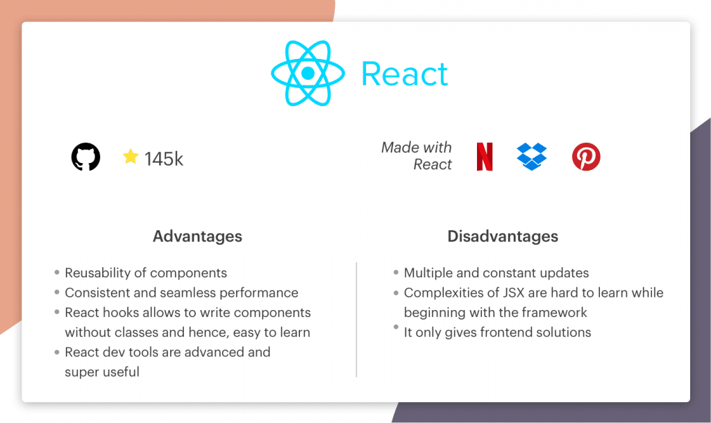

Front-end Technologies — A Detailed Guide
Front-end technologies are an essential part of any business that strives to enhance user interaction, efficiency, and the look and feel of their website or application. Development teams use front-end technologies to create a website’s design, structure, animation, and everything you see on the screen when you open it.
A great deal of front-end technology is used because it facilitates the work of web coders and designers, increases their productivity, and makes the development process quicker, simpler, and more effective.
Every year, new tools are introduced, rendering the old ones obsolete. But, due to the exponential growth of front-end technologies over the past few years, it can be difficult for developers to keep up with the sheer amount of technology at their disposal.
Top Front End Technologies
1. Angular.js
AngularJS is an open-source Javascript front-end framework and is an integral part of the MEAN stack (MongoDB, Express.js, Angular, And Node.js). It is mostly used for developing single-page web applications (SPAs). Since it’s a flexible framework, developers can create progressive web apps or integrate the framework with technologies such as Ionic, Cordova, or NativeScripy to design near-native mobile applications.
The tool has inbuilt templates that make it easy for developers to build UI views quickly. AngularJS provides simple, fast data binding without developer intervention. By supporting caching, it reduces the CPU’s workload. It provides fast loading and less navigation, ensuring an effective user experience. Gmail, Forbes, Upwork, Deutsche Bank, etc., are some of the popular websites and applications built using Angular.js.
Key features:
- With an Angular application, data binding is performed without the need to write any
separate code.
By adding a few snippets of code, we are able to connect data from the HTML control to the application data. - An Angular application is not browser-specific, so there are no browser-specific
constraints.
Besides internet explorer 8.0, it runs on all major browsers and on mobile devices, including Android and iOS-based devices. - A built-in dependency injection feature in AngularJS makes it easy to develop, test, and understand applications.
- Ipsa adipisci fugit assumenda dicta voluptates nihil reprehenderit consequatur alias facilis rem
- A number of built-in services are available with AngularJS, such as $http to make
XMLHttpRequests.
They are singleton objects that are instantiated only once in the app.
2. React.js
ReactJS, also known as React, is a well-known open-source JavaScript front-end library for creating dynamic and interactive applications and improving UI/UX design. Basically, it’s responsible only for the view layer. Facebook initially developed and maintained the technology, which was then used in some of its products, such as Instagram and WhatsApp. With frameworks such as Next.js, React can be utilized for developing single-page, mobile, or server-side applications. It allows code to be debugged more efficiently by separating it into components.
More than 220,000 websites currently utilize React. A few of the giants that use this platform for their applications/websites include Apple, PayPal, BBC, Dropbox, Reddit, and Netflix.
Key features:
- The application built with ReactJS has a component-based architecture, meaning that it
consists of several components, each with its own logic written in JS.
The reusable nature of these components allows you to maintain the code when working on larger-scale projects. - ReactJS is designed to support unidirectional data flow and one-way data binding.
One-way data-binding
gives you more control across your application. - The Virtual DOM of React offers flexibility and speeds up app development.
Document object models (DOMs) are APIs (Application programming interfaces) that
manage how documents can be accessed and manipulated. - Ipsa adipisci fugit assumenda dicta voluptates nihil reprehenderit consequatur alias facilis rem
- With declarative UI, React code can be more easily read and fixed. In terms of
developing UIs that are exciting and engaging,
React JS is the best choice not just for web applications but also for mobile applications.
3. Vue.js
The popular Javascript framework ‘Vue.js’ was created by Evan You and used to develop interactive UIs (User Interfaces) (UIs) and SPAs (Single-page applications). Vue.js is one of the best JavaScript frameworks for creating a lightweight and adaptable interactive UI elements. The MVVM model (Model View-View Model) architecture pattern and its lightweight nature make Vue.js extremely easy to implement.
HTML and CSS knowledge is required to use Vue.js. Also, Vue.js has a core library focused solely on the view layer. Frameworks like this can be seamlessly integrated into big projects for front-end development without causing any problems or issues. 9GAG, GitLab, Nintendo, Behance, and Laravel are some of the popular websites and applications built using Vue.js.
4. jQuery
Introduced in 2006, jQuery is one of the earliest frontend frameworks. Despite its launch date, what makes it stand out is its relevance even in today’s tech world. Not only does jQuery offer simplicity and ease to use, but it also minimizes the need to write extensive JavaScript codes. Thanks to its existence for years, there is a considerable jQuery community for the solutions. Fundamentally a library, jQuery is used to manipulate CSS and DOM and to optimize the functionality and interactivity of a website.
Though we weren’t able to build mobile apps with jQuery, recent developments in jQuery Mobile, the usage boundaries have been expanded. What’s more, the recent development in this framework enables developers to build native mobile applications with its HTML5-based UI system–jQuery Mobile. Besides, jQuery is browser-friendly and supports any browser you intend to use.
5. Emberjs
Developed in 2011, Emberjs is component-based and offers two-way data binding similar to Angular. It is designed to handle the increasing demands of modern-day technologies seamlessly. You can develop complex mobile and web applications with Emberjs and expect its efficient architecture to handle concerns.
However, Ember’s learning curve is one of its few shortcomings. The framework ends up as one of the toughest frameworks to learn because of its rigid and conventional structure. Being relatively new and under-explored, the developer community is small. Anyone with no constraint in dedicating the time for learning can go for it.
6. Backbonejs
One of the easiest frameworks out there, Backbonejs allows you to develop single-page applications swiftly. It is a framework which is based on the MVC architecture. Similar to a Controller, MVC architecture’s View allows the implementation of component logic. Besides, this framework can also run engines like underscore.js and Moustache. When developing applications with Backbonejs, you could also use tools like Thorax, Marionette, Chaplin, Handlebars, and more to make the best use of the framework.
The platform also allows you to develop projects that require different types of users, where the arrays can be used to distinguish the models. So, regardless of whether you intend to use Backbonejs for frontend or backend, this is an ideal choice as its REST API compatibility provides seamless synchronization between the two.
7. Semantic-UI
Despite being a newcomer in the frameworks arena, Semantic-UI quickly is on its way to becoming one of the most popular front-end frameworks across the globe. What makes it stand out is its intuitive user interface and simplicity in terms of functionality and usability. It incorporates natural language, making codes self-explanatory.
It means that freshers who are relatively new to the coding scene can quickly grasp the framework. Besides, it also allows for a streamlined development process thanks to its integration with tons of 3rd party libraries.
8. Svelte

Svelte is the latest of all frontend frameworks. The framework has made a difference by putting the work into a compile step instead of putting them in the browser, unlike frameworks like React and Vue. It writes the code to update the document object model in synchronization with the state of the application.
The framework is best suitable for small app projects and with a small team. Because it doesn’t have a bigger support community, it is better not to use it for complex projects.
Conclusion
So, these are some of my recommendations for best frontend frameworks based on my experience ranging from developing large-scale projects to MVPs. However, I believe you now have an idea of which framework to go for depending on your project needs.
Since there are plenty of options to choose from among the frontend frameworks, you may be indecisive about the technology. It isn’t effortless to understand each and have the practical experience and then select among them. I personally love taking the insights from frontend developers at Simform while choosing the framework for any project which is designed from scratch. The best part is, almost all the frameworks can be learned with little effort, even if someone’s at the beginner level. I’d recommend you to choose the frontend framework by taking advice from your most senior frontend developer who can gauge the pros and cons.